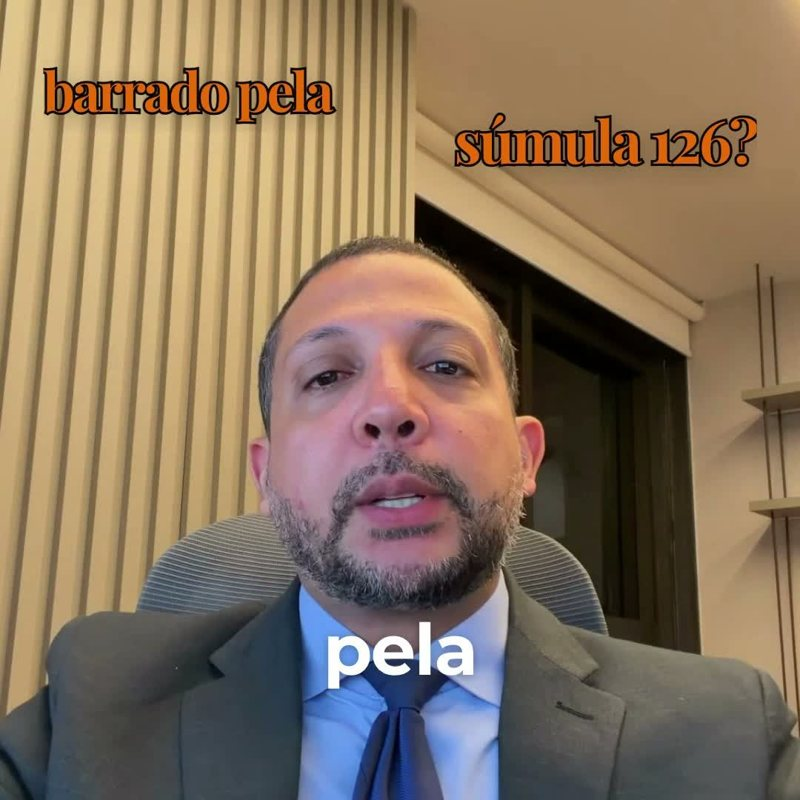
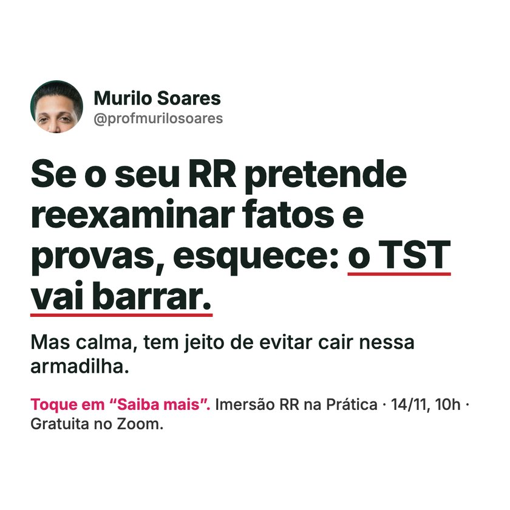
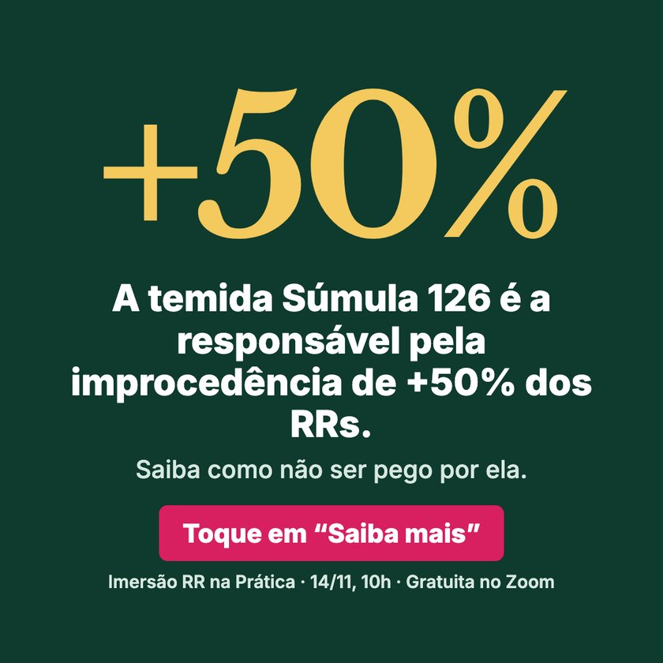
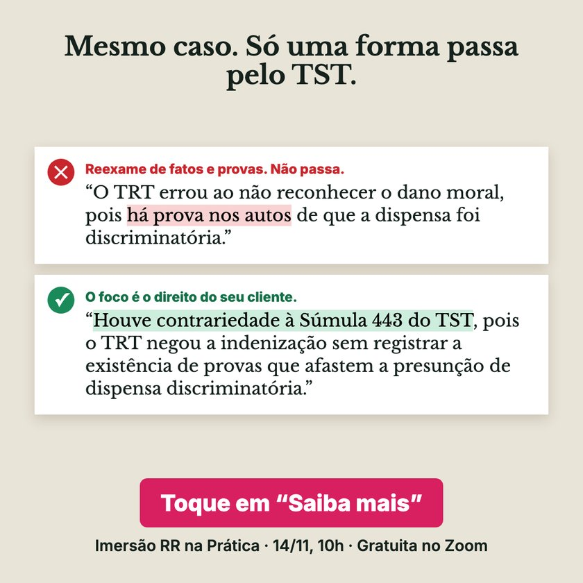
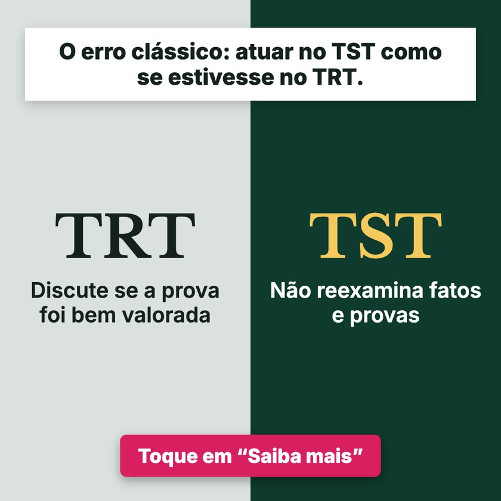
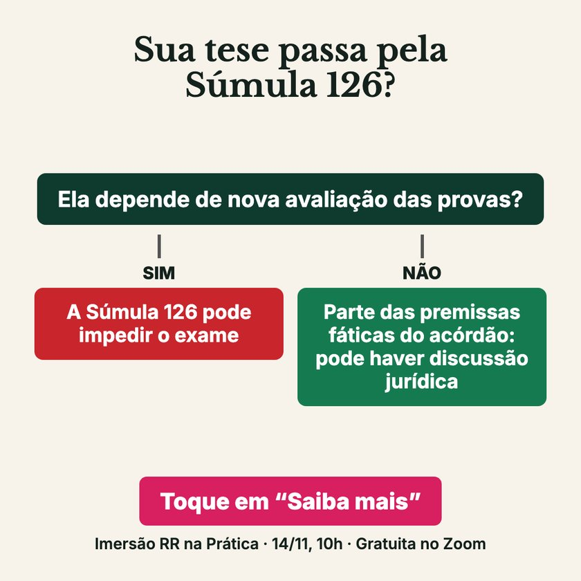
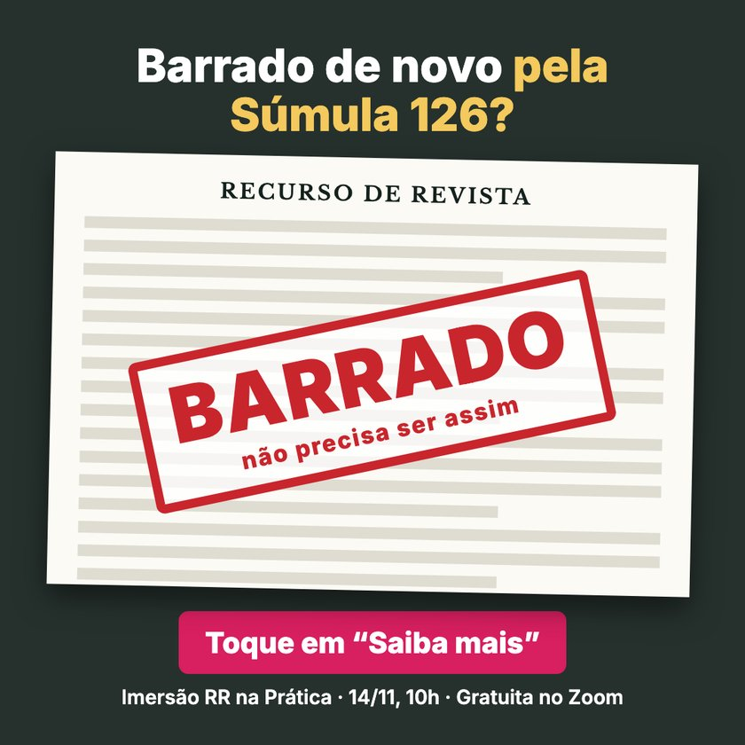
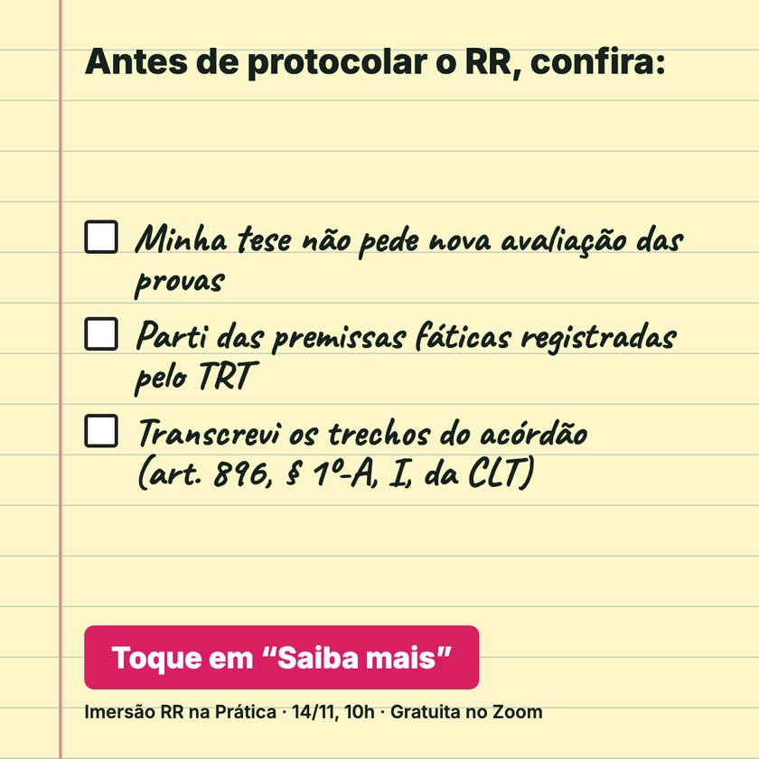
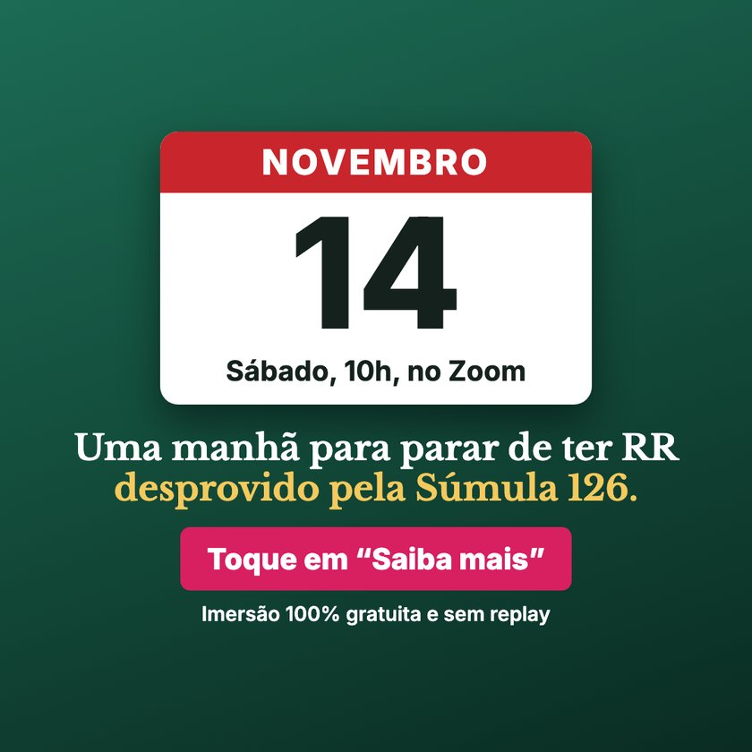

Imersão RR na Prática · Captação · 28 a 31/10/2026
A Súmula 126 é o tema que mais traz inscritos, e pode render páginas próprias
Em 173 leads nos primeiros dias, o AD12 tem o menor custo por lead (R$ 10,40), seguido do CVAL2 (R$ 11,47). O CN10 tem o melhor CTR (1,33%). A partir deles, sugerimos 3 páginas de captação e 10 estáticos novos para sua aprovação.
Os dados são dos primeiros dias da captação e ainda devem mudar com mais volume.
Até R$ 10 por lead
Combinações de criativo e público com pelo menos 4 leads.
Criativo
Público
Leads
Custo por lead
CTR link
CN7
Quente 1
4
R$ 6,49
1,04%
CN10
Frio 1
8
R$ 7,40
1,58%
AD12
Quente 2
15
R$ 7,54
1,34%
CVAL7
Frio 1
4
R$ 9,21
0,88%
CVAL2
Quente 1
6
R$ 9,63
1,06%
CVAL2
Frio 3
11
R$ 9,79
1,28%
De R$ 10 a R$ 12 por lead
Na soma de todos os públicos, AD12 e CVAL2 ficam nesta faixa. Por combinação:
Criativo
Público
Leads
Custo por lead
CTR link
AD12
Frio 1
11
R$ 10,36
0,99%
CVAL12
Quente 2
5
R$ 10,50
0,53%
CVAL12
Frio 1
4
R$ 10,60
1,00%
CVAL6
Frio 3
6
R$ 11,22
0,77%
AD7
Frio 2
5
R$ 11,39
0,94%
CN8
Quente 1
4
R$ 11,85
1,11%
Melhores taxas de CTR
O CTR mostra quanto a peça atrai o clique. O custo por lead também depende de quanto a página converte essa visita.
Criativo
Leads
Custo por lead
CTR link
Connect rate
Página → lead
CN10 Carrossel, distinção técnica na Súmula 126
11
R$ 13,56
1,33%
73%
18%
AD9 Vídeo, erro no TRT
5
R$ 22,59
1,31%
74%
25%
AD2 Vídeo, Súmula 126
5
R$ 22,65
1,19%
67%
23%
AD12 Vídeo, pergunta sobre Súmula 126
29
R$ 10,40
1,11%
84%
40%
CVAL2 Carrossel, Súmula 126 (+50%)
21
R$ 11,47
1,09%
71%
26%
Três páginas sugeridas
A ideia é continuar, na página, a conversa que cada anúncio começou, com o formulário já visível. Os objetivos abaixo são hipóteses para testar.

AD12, “barrado pela Súmula 126”
R$ 10,40
29 leads · CTR 1,11% · página 40%
Por que esta página: o vídeo já converte bem na página atual. A nova repete a pergunta do aluno e mostra o exemplo errado e o certo.
Principal ideia: “Esse é um erro clássico”. Quem clicou reconhece o próprio problema.
Objetivo do teste: levar a página de 40% para 45%, com lead perto de R$ 9,18.
A Súmula 126 concentra os melhores resultados. AD12, CVAL2 e CN10 trouxeram 35% dos leads, a R$ 11,34 por lead em média.
A abertura e o exemplo concreto pesam. O AD2 também fala de Súmula 126 e está em R$ 22,65, por isso os novos estáticos partem das aberturas que melhor funcionaram.
Vídeo e carrossel se complementam. O vídeo leva visitas mais prontas para se inscrever. O carrossel atrai mais cliques, e uma página alinhada pode aproveitá-los melhor.
A maior oportunidade está na página. 80% dos cliques chegam até ela e 21% das visitas viram lead. Cada ponto a mais reduz o custo de todos os criativos.
Como testar as páginas
Cada criativo roda na página própria e na atual, ao mesmo tempo e nos mesmos públicos.
A leitura acontece com cerca de 50 cliques por página.
Cada página nova precisa do mesmo rastreio da atual, com um teste real de inscrição antes de entrar no ar.
Estas páginas entram na mesma fila das variações de AD7, AD8 e AD9 que o time está preparando.
10 estáticos novos
Cada peça tem um formato próprio, em feed e story, todas sobre Súmula 126. Os textos partem de AD12, CVAL2, CN10 e da página atual.
E01. Caixinha de pergunta com retratoA pergunta do aluno, com a resposta do início do vídeo.Inspirado em: AD12Ver versão story

E02. Post de uma fraseA frase mais direta do carrossel.Inspirado em: CVAL2Ver versão story

E03. Número giganteO dado de +50% vira a imagem inteira.Inspirado em: CVAL2Ver versão story

E04. Dois trechos de petiçãoO exemplo errado e o certo, com marcação.Inspirado em: CVAL2 e AD12Ver versão story

E05. Duas colunas em contrasteAtuar no TST como se estivesse no TRT.Inspirado em: AD12Ver versão story

E06. Fluxograma de decisãoA distinção técnica vira um teste rápido.Inspirado em: CN10Ver versão story

E07. Documento carimbadoA dor em uma imagem, sem texto técnico.Inspirado em: AD12Ver versão story

E08. Bloco de notas com checklistTrês pontos para conferir antes de protocolar.Inspirado em: CN10 e CVAL2Ver versão storyE09. Retrato com númerosCredibilidade do professor junto com a promessa.Inspirado em: Página atualVer versão story

E10. Folha de calendárioDia, hora, gratuito e sem replay.Inspirado em: Página atual e CN10Ver versão story
Dados de anúncios até 31/10/2026. CTR link = cliques no link ÷ impressões. Connect rate = visitas à página ÷ cliques no link. Página → lead = leads ÷ visitas à página. As páginas são protótipos.